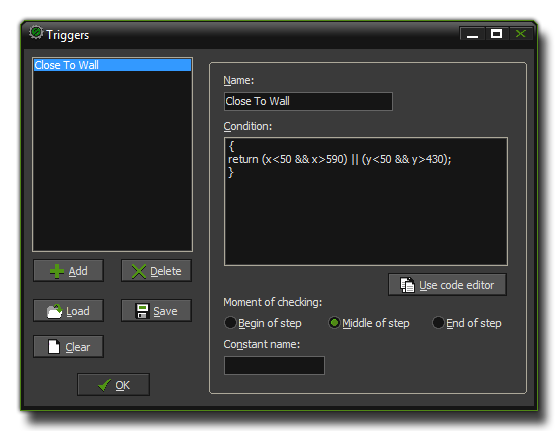
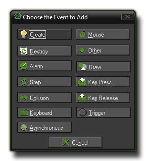

Triggers, as implemented by previous versions of GameMaker, were in-efficient, very little used by the majority of people, and only seemed to break up the game-logic and make tracking complex games far more
difficult than necessary. For those that used them, the same functionality can easily be achieved by creating a script and calling it in either the begin step event, the step event or the end step
event of an object.
As you may have an older file made with previous versions of GameMaker that uses triggers, you can find an outline of what the trigger event was and how it was used below for use as a reference :
To define trigger events you chose Define Triggers from the Resources menu at the top of the main GameMaker window, or you can select to add a trigger event from within the object and then select "Add/Modify Triggers". Either method will open the following form where you define your trigger with a short code function. The form shown below contains an example of how this may be written.

At the left you see a list of all triggers that have so far been defined by you (obviously empty if you haven't yet created any!). Below there are some buttons which have the following functions:
Once you are finished you must press the OK button to save the changes and be able to use the trigger event within an object. If you do not want to save the changes,
simply close the form by clicking on the cross at the top right corner and indicate that you do not want to save changes in the dialogue box that will pop up.
Once you have created a trigger you must fill in its properties, normally starting with giving it a name. This name can be anything you wish, as long as you use permitted characters (see further down for
information about naming the trigger as a constant), but it should always be something descriptive so that you know instantly what it does when you select it to use in an object. This name will
appear in the menu with available triggers and in the event lists for objects. The next you must do is specify the condition that will "trigger" the trigger event! This is done by writing a piece of GML
code into the window on the right which returns either a true or false value when run. In this way a trigger will only fire when the return value is true.
Assume you want to create an event that happens when the player presses both the Control key and the A key. For this you could write the following condition script:
{
return keyboard_check(ord('A')) && keyboard_check(vk_control);
}
As you can see this condition script will return false unless both the Control key and the A key are pressed together.
You can actually put some quite complex and complete scripts as the condition, as long as somewhere in there you have a return statement that evaluates as true or false. For example, to have
an event happen only when the number of instances (in this case "obj_ball") is between 3 and 5, you can use the following condition script:
{
var n;
n = instance_number(obj_ball);
return (n >= 3) && (n <= 5);
}
You may find that sometimes the code you need to define the condition is too long for the code window within the trigger form, so you might want to edit it in the actual code editor instead. To that end
press the button Use code editor to open that window and keep working as normal, clicking on the tick in the top left corner to save your changes to the trigger.
You can create many other type of trigger events. For example, events that check whether you are near to an enemy, events to check whether you collected enough money or have a high score, events to spawn an object at a certain place... The possibilities are endless which makes using triggers a very handy way to organise your game, and re-use scripts that are helpful in other projects.
After you have specified the condition script, you should specify when the condition is to be tested. There are three options for this, all related to the step event :
Most of the time the default middle position is fine, but in certain cases you need the other moments, particularly if the outcome of the trigger affects the next part of the step, or relies on something that has been done previously.
Finally, you may even create a constant with which to call the specified trigger event from code. To do this you must give it a name which must not contain spaces, nor unauthorised characters, and be easy to
remember. If you look at the image above, you can see that we have used "tr_Near_Wall" to define the constant for that trigger. This follows the naming rules, is descriptive and easy to understand and will allow the trigger
to be called from any other event in code. It should be noted that a trigger used in code does not evaluate to true or false, but it may still be used to set variables and other things. A sample of the code use would be :
event_perform(ev_trigger, tr_Near_Wall);
Once you have defined your triggers you can use them when defining objects. To do this you would click on the Add Event, and then select Trigger events.

A pop-up will give you a list of the triggers you have created or loaded and you can select from there the one you wish to use. It will then be added to the event list as normal.